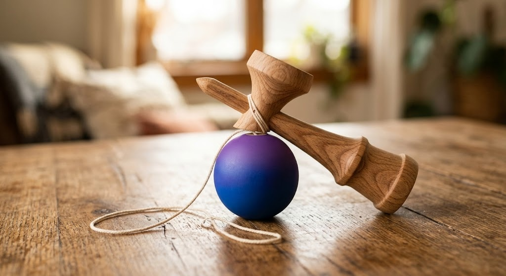

A beech wood kendama - the Japanese ball-and-cup skill toy built around one simple catch that opens into hundreds of tricks as your hand-eye coordination improves.

A genuinely screen-free way to focus the hands and mind.
Each trick unlocks the next - there's always a next step.
Built for frequent practice, not a one-time novelty.
Fits in a bag for practice anywhere.
Kendama is a traditional Japanese skill toy - a wooden handle (ken) with three cups and a spike, paired with a ball (tama) on a string.
What starts as just catching the ball in a cup opens into a huge range of tricks, from balancing the ball on the spike to full combo sequences - it's as much a competitive sport in Japan as it is a casual pastime.
A satisfying alternative to scrolling.
Each trick takes repetition to land.
Genuinely enjoyed across ages.
The basic catch is quick to pick up; tricks build in difficulty from there.
It's enjoyed by both kids and adults - check the listing for any age guidance.
Occasionally with heavy use - an extra string is included.
A beech wood Japanese kendama skill toy - see current pricing and availability on Amazon.
Check Price on Amazon →